library(dplyr)
library(ggplot2)
library(knitr)
library(irr)
library(caret)
library(pROC)
library(blandr)
library(kableExtra)
library(knitr)Sleep PSG validation
Sleep
PSD
This post presents an analysis of sleep stage classification validation using polysomnography (PSG) as the ground truth and a headband-based device as the test instrument. The workflow includes generating synthetic sleep data, loading real-world datasets, and comparing sleep stage distributions between the two devices. The validation process includes Bland-Altman analysis, Pearson correlation, Cohen’s Kappa, and statistical measures of agreement. The results provide insight into the accuracy and bias of wearable sleep-tracking devices in sleep stage classification.
Mario Miguel ![]()
Load necessary libraries
Add seeds for reproductibility - used when generating synthetic data only
set.seed(2) # For the PSG dataset
set.seed(1) # For the Headband datasetDefine parameters (need to run this code before generating synthetic data and before opening real data, because of sleep_stages)
num_subjects <- 20
epochs_per_night <- 8 * 60 * 2 # 8 hours, 30 seconds per epoch
sleep_stages <- c("W", "N1", "N2", "N3", "R")Generate synthetic data - PSG ground truth
Warning!
Do not run this if you are using real data.
Note: Instead of using the synthetic data, you can use the real data from the ground truth device and the device you want to validate. To do so, you can load the data using the
read.csv()function and then proceed with the analysis. Please mind the structure of the data and adjust the code accordingly (Subject ID, Epoch, Time, Sleep Stage).
generate_sleep_data_with_cycles <- function(subject_id, total_epochs, cycles) {
# Define time variables
epoch_duration <- 30 # seconds
cycle_duration <- 90 * 60 / epoch_duration # Approximate 90-minute cycle in epochs
# Define stage probabilities per cycle
cycle_probs <- list(
c(W = 0.05, N1 = 0.1, N2 = 0.2, N3 = 0.55, R = 0.1), # Cycle 1: more N3
c(W = 0.05, N1 = 0.1, N2 = 0.3, N3 = 0.45, R = 0.1), # Cycle 2: slightly more N2
c(W = 0.05, N1 = 0.15, N2 = 0.4, N3 = 0.2, R = 0.2), # Cycle 3: less N3, more REM
c(W = 0.05, N1 = 0.2, N2 = 0.35, N3 = 0.1, R = 0.3), # Cycle 4: mostly REM
c(W = 0.05, N1 = 0.25, N2 = 0.35, N3 = 0.05, R = 0.3) # Cycle 5: mainly REM with N2
)
# Initialize data frame for each subject
sleep_data <- data.frame(
Subject_ID = integer(0), Epoch = integer(0),
Time = as.POSIXct(character(0)), Sleep_Stage = character(0)
)
# Generate epochs for each cycle with specified probabilities
for (cycle in 1:cycles) {
# Define epochs for current cycle
cycle_epochs <- ifelse(cycle < cycles, cycle_duration, total_epochs - nrow(sleep_data))
# Generate data for this cycle
cycle_data <- data.frame(
Subject_ID = subject_id,
Epoch = (nrow(sleep_data) + 1):(nrow(sleep_data) + cycle_epochs),
Time = seq.POSIXt(
from = as.POSIXct("2024-01-01 22:00:00") + ((cycle - 1) * 90 * 60),
by = "30 secs",
length.out = cycle_epochs
),
Sleep_Stage = sample(names(cycle_probs[[cycle]]), cycle_epochs, replace = TRUE, prob = cycle_probs[[cycle]])
)
# Append to overall data
sleep_data <- rbind(sleep_data, cycle_data)
}
return(sleep_data)
}
# Generate PSG dataset with cycles for each subject
num_cycles <- 5 # Approximate number of cycles per night
PSG <- do.call(rbind, lapply(1:num_subjects, generate_sleep_data_with_cycles, total_epochs = epochs_per_night, cycles = num_cycles))
# Save the dataset as a CSV file
#write.csv(PSG, "PSG_data.csv", row.names = FALSE)Generate synthetic data - Headband
Warning!
Do not run this if you are using real data.
generate_sleep_data_with_cycles <- function(subject_id, total_epochs, cycles) {
# Define time variables
epoch_duration <- 30 # seconds
cycle_duration <- 90 * 60 / epoch_duration # Approximate 90-minute cycle in epochs
# Define stage probabilities per cycle
cycle_probs <- list(
c(W = 0.05, N1 = 0.1, N2 = 0.2, N3 = 0.55, R = 0.1), # Cycle 1: more N3
c(W = 0.05, N1 = 0.1, N2 = 0.3, N3 = 0.45, R = 0.1), # Cycle 2: slightly more N2
c(W = 0.05, N1 = 0.15, N2 = 0.4, N3 = 0.2, R = 0.2), # Cycle 3: less N3, more REM
c(W = 0.05, N1 = 0.2, N2 = 0.35, N3 = 0.1, R = 0.3), # Cycle 4: mostly REM
c(W = 0.05, N1 = 0.25, N2 = 0.35, N3 = 0.05, R = 0.3) # Cycle 5: mainly REM with N2
)
# Initialize data frame for each subject
sleep_data <- data.frame(
Subject_ID = integer(0), Epoch = integer(0),
Time = as.POSIXct(character(0)), Sleep_Stage = character(0)
)
# Generate epochs for each cycle with specified probabilities
for (cycle in 1:cycles) {
# Define epochs for current cycle
cycle_epochs <- ifelse(cycle < cycles, cycle_duration, total_epochs - nrow(sleep_data))
# Generate data for this cycle
cycle_data <- data.frame(
Subject_ID = subject_id,
Epoch = (nrow(sleep_data) + 1):(nrow(sleep_data) + cycle_epochs),
Time = seq.POSIXt(
from = as.POSIXct("2024-01-01 22:00:00") + ((cycle - 1) * 90 * 60),
by = "30 secs",
length.out = cycle_epochs
),
Sleep_Stage = sample(names(cycle_probs[[cycle]]), cycle_epochs, replace = TRUE, prob = cycle_probs[[cycle]])
)
# Append to overall data
sleep_data <- rbind(sleep_data, cycle_data)
}
return(sleep_data)
}
# Generate PSG dataset with cycles for each subject
num_cycles <- 5 # Approximate number of cycles per night
Headband <- do.call(rbind, lapply(1:num_subjects, generate_sleep_data_with_cycles, total_epochs = epochs_per_night, cycles = num_cycles))
# Save the dataset as a CSV file
#write.csv(Headband, "Headband.csv", row.names = FALSE)Calculate the percentage of time spent in each sleep stage
# Calculate the percentage of time spent in each sleep stage for the PSG dataset
PSG_percentage <- PSG %>%
group_by(Subject_ID, Sleep_Stage) %>%
summarise(Epoch_Count = n(), .groups = 'drop') %>%
mutate(Percentage = (Epoch_Count / (8 * 60 * 2)) * 100) # Total epochs = 8 hours * 60 mins * 2 (30 sec epochs)
# Calculate the percentage of time spent in each sleep stage for the Headband dataset
Headband_percentage <- Headband %>%
group_by(Subject_ID, Sleep_Stage) %>%
summarise(Epoch_Count = n(), .groups = 'drop') %>%
mutate(Percentage = (Epoch_Count / (8 * 60 * 2)) * 100) # Total epochs = 8 hours * 60 mins * 2 (30 sec epochs)
# Merge the percentages for both datasets
merged_data <- full_join(PSG_percentage, Headband_percentage,
by = c("Subject_ID", "Sleep_Stage"),
suffix = c("_PSG", "_Headband"))Plot the percentage of time spent in each sleep stage for PSG and Headband
difference_data <- merged_data %>%
mutate(Difference = (Percentage_PSG - Percentage_Headband)) %>%
group_by(Sleep_Stage) %>%
summarise(Average_Difference = mean(Difference, na.rm = TRUE), .groups = 'drop')
# Plot the differences for each sleep stage
ggplot(difference_data, aes(x = Sleep_Stage, y = Average_Difference, fill = Sleep_Stage)) +
geom_bar(stat = "identity", position = position_dodge(width = 0.8), width = 0.7) +
labs(title = "Difference in Time Spent per Sleep Stage between PSG and Headband",
x = "Sleep Stage",
y = "Average Difference in Percentage (%)") +
scale_fill_brewer(palette = "Set3") +
theme_minimal() +
theme(legend.position = "none")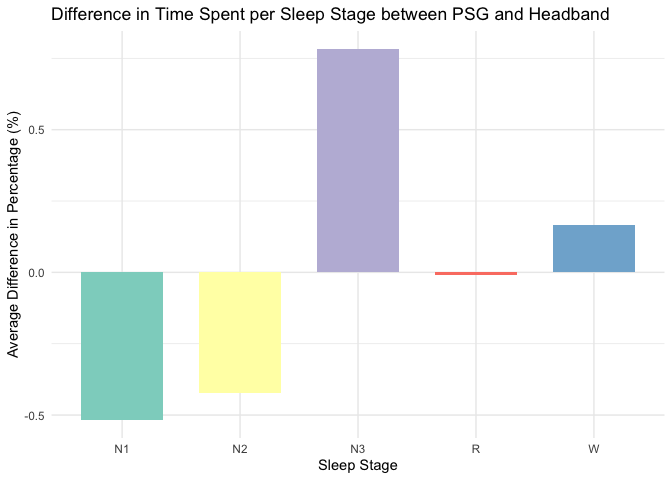
Calculate mean differences and confidence intervals for each sleep stage - Bias
# Calculate mean differences and confidence intervals for each sleep stage
mean_diff_results <- merged_data %>%
group_by(Sleep_Stage) %>%
summarise(
Mean_Difference = mean(Percentage_PSG - Percentage_Headband, na.rm = TRUE),
SD_Difference = sd(Percentage_PSG - Percentage_Headband, na.rm = TRUE),
Count = n(),
SE_Difference = SD_Difference / sqrt(Count),
CI_Lower = Mean_Difference - qt(0.975, Count - 1) * SE_Difference, # 95% CI
CI_Upper = Mean_Difference + qt(0.975, Count - 1) * SE_Difference,
.groups = 'drop'
)
# Plot the mean difference with error bars
library(ggplot2)
ggplot(mean_diff_results, aes(x = Sleep_Stage, y = Mean_Difference)) +
geom_bar(stat = "identity", fill = "lightblue", color = "black") +
geom_errorbar(aes(ymin = CI_Lower, ymax = CI_Upper), width = 0.2, color = "darkblue") +
geom_hline(yintercept = 0, linetype = "dashed", color = "red") + # Line at zero for reference
labs(title = "Mean Difference in Time Spent in Each Sleep Stage",
x = "Sleep Stage",
y = "Mean Difference (PSG - Headband) [%]") +
theme_minimal()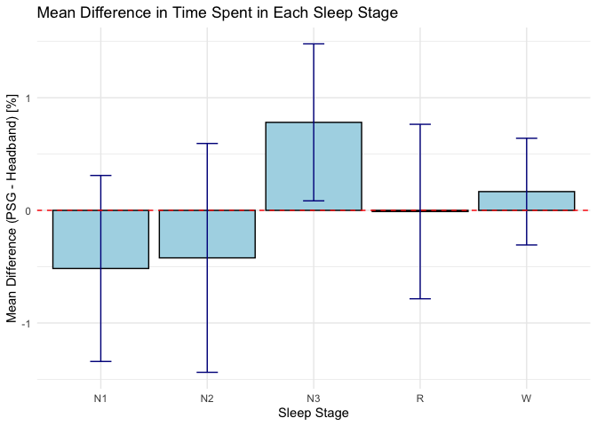
Bland-Altman Statistics
# List of unique sleep stages
sleep_stages <- unique(merged_data$Sleep_Stage)
# Initialize an empty list to store results
ba_results <- list()
# Loop through each sleep stage and calculate Bland-Altman statistics
for (stage in sleep_stages) {
stage_data <- merged_data %>% filter(Sleep_Stage == stage)
ba_stats <- blandr.statistics(stage_data$Percentage_PSG, stage_data$Percentage_Headband)
# Append the Bland-Altman statistics object to the list with the stage name
ba_results[[stage]] <- ba_stats
}
# Print the results for each sleep stage
for (stage in names(ba_results)) {
cat("\n\nResults for Sleep Stage:", stage, "\n")
print(ba_results[[stage]])
}Results for Sleep Stage: N1
Bland-Altman Statistics
=======================
t = -1.3072, df = 19, p-value = 0.2067
alternative hypothesis: true bias is not equal to 0
=======================
Number of comparisons: 20
Maximum value for average measures: 17.8125
Minimum value for average measures: 15.05208
Maximum value for difference in measures: 5
Minimum value for difference in measures: -3.541667
Bias: -0.515625
Standard deviation of bias: 1.76404
Standard error of bias: 0.3944513
Standard error for limits of agreement: 0.6856898
Bias: -0.515625
Bias- upper 95% CI: 0.309971
Bias- lower 95% CI: -1.341221
Upper limit of agreement: 2.941893
Upper LOA- upper 95% CI: 4.377058
Upper LOA- lower 95% CI: 1.506728
Lower limit of agreement: -3.973143
Lower LOA- upper 95% CI: -2.537978
Lower LOA- lower 95% CI: -5.408308
=======================
Derived measures:
Mean of differences/means: -3.040415
Point estimate of bias as proportion of lowest average: -3.425606
Point estimate of bias as proportion of highest average -2.894737
Spread of data between lower and upper LoAs: 6.915036
Bias as proportion of LoA spread: -7.456577
=======================
Bias:
-0.515625 ( -1.341221 to 0.309971 )
ULoA:
2.941893 ( 1.506728 to 4.377058 )
LLoA:
-3.973143 ( -5.408308 to -2.537978 )
Results for Sleep Stage: N2
Bland-Altman Statistics
=======================
t = -0.86936, df = 19, p-value = 0.3955
alternative hypothesis: true bias is not equal to 0
=======================
Number of comparisons: 20
Maximum value for average measures: 33.85417
Minimum value for average measures: 29.89583
Maximum value for difference in measures: 4.895833
Minimum value for difference in measures: -4.583333
Bias: -0.421875
Standard deviation of bias: 2.170194
Standard error of bias: 0.4852702
Standard error for limits of agreement: 0.8435639
Bias: -0.421875
Bias- upper 95% CI: 0.5938073
Bias- lower 95% CI: -1.437557
Upper limit of agreement: 3.831706
Upper LOA- upper 95% CI: 5.597306
Upper LOA- lower 95% CI: 2.066107
Lower limit of agreement: -4.675456
Lower LOA- upper 95% CI: -2.909857
Lower LOA- lower 95% CI: -6.441056
=======================
Derived measures:
Mean of differences/means: -1.323016
Point estimate of bias as proportion of lowest average: -1.41115
Point estimate of bias as proportion of highest average -1.246154
Spread of data between lower and upper LoAs: 8.507162
Bias as proportion of LoA spread: -4.959057
=======================
Bias:
-0.421875 ( -1.437557 to 0.5938073 )
ULoA:
3.831706 ( 2.066107 to 5.597306 )
LLoA:
-4.675456 ( -6.441056 to -2.909857 )
Results for Sleep Stage: N3
Bland-Altman Statistics
=======================
t = 2.3468, df = 19, p-value = 0.02993
alternative hypothesis: true bias is not equal to 0
=======================
Number of comparisons: 20
Maximum value for average measures: 27.44792
Minimum value for average measures: 24.79167
Maximum value for difference in measures: 3.333333
Minimum value for difference in measures: -1.979167
Bias: 0.78125
Standard deviation of bias: 1.488757
Standard error of bias: 0.3328962
Standard error for limits of agreement: 0.5786862
Bias: 0.78125
Bias- upper 95% CI: 1.47801
Bias- lower 95% CI: 0.08449032
Upper limit of agreement: 3.699214
Upper LOA- upper 95% CI: 4.910418
Upper LOA- lower 95% CI: 2.488009
Lower limit of agreement: -2.136714
Lower LOA- upper 95% CI: -0.9255094
Lower LOA- lower 95% CI: -3.347918
=======================
Derived measures:
Mean of differences/means: 3.090366
Point estimate of bias as proportion of lowest average: 3.151261
Point estimate of bias as proportion of highest average 2.8463
Spread of data between lower and upper LoAs: 5.835927
Bias as proportion of LoA spread: 13.3869
=======================
Bias:
0.78125 ( 0.08449032 to 1.47801 )
ULoA:
3.699214 ( 2.488009 to 4.910418 )
LLoA:
-2.136714 ( -3.347918 to -0.9255094 )
Results for Sleep Stage: R
Bland-Altman Statistics
=======================
t = -0.028155, df = 19, p-value = 0.9778
alternative hypothesis: true bias is not equal to 0
=======================
Number of comparisons: 20
Maximum value for average measures: 23.22917
Minimum value for average measures: 19.53125
Maximum value for difference in measures: 2.291667
Minimum value for difference in measures: -3.333333
Bias: -0.01041667
Standard deviation of bias: 1.654596
Standard error of bias: 0.3699789
Standard error for limits of agreement: 0.6431485
Bias: -0.01041667
Bias- upper 95% CI: 0.763958
Bias- lower 95% CI: -0.7847913
Upper limit of agreement: 3.232591
Upper LOA- upper 95% CI: 4.578716
Upper LOA- lower 95% CI: 1.886466
Lower limit of agreement: -3.253424
Lower LOA- upper 95% CI: -1.907299
Lower LOA- lower 95% CI: -4.59955
=======================
Derived measures:
Mean of differences/means: -0.0266
Point estimate of bias as proportion of lowest average: -0.05333333
Point estimate of bias as proportion of highest average -0.04484305
Spread of data between lower and upper LoAs: 6.486016
Bias as proportion of LoA spread: -0.1606019
=======================
Bias:
-0.01041667 ( -0.7847913 to 0.763958 )
ULoA:
3.232591 ( 1.886466 to 4.578716 )
LLoA:
-3.253424 ( -4.59955 to -1.907299 )
Results for Sleep Stage: W
Bland-Altman Statistics
=======================
t = 0.73662, df = 19, p-value = 0.4703
alternative hypothesis: true bias is not equal to 0
=======================
Number of comparisons: 20
Maximum value for average measures: 5.885417
Minimum value for average measures: 4.0625
Maximum value for difference in measures: 2.083333
Minimum value for difference in measures: -1.458333
Bias: 0.1666667
Standard deviation of bias: 1.011854
Standard error of bias: 0.2262575
Standard error for limits of agreement: 0.393312
Bias: 0.1666667
Bias- upper 95% CI: 0.640229
Bias- lower 95% CI: -0.3068956
Upper limit of agreement: 2.149901
Upper LOA- upper 95% CI: 2.973112
Upper LOA- lower 95% CI: 1.326689
Lower limit of agreement: -1.816567
Lower LOA- upper 95% CI: -0.9933558
Lower LOA- lower 95% CI: -2.639779
=======================
Derived measures:
Mean of differences/means: 3.584975
Point estimate of bias as proportion of lowest average: 4.102564
Point estimate of bias as proportion of highest average 2.831858
Spread of data between lower and upper LoAs: 3.966468
Bias as proportion of LoA spread: 4.201891
=======================
Bias:
0.1666667 ( -0.3068956 to 0.640229 )
ULoA:
2.149901 ( 1.326689 to 2.973112 )
LLoA:
-1.816567 ( -2.639779 to -0.9933558 ) # List of unique sleep stages
sleep_stages <- unique(merged_data$Sleep_Stage)
# Initialize an empty list to store results
ba_results <- list()
# Loop through each sleep stage and calculate Bland-Altman statistics
for (stage in sleep_stages) {
stage_data <- merged_data %>% filter(Sleep_Stage == stage)
# Calculate Bland-Altman statistics
ba_stats <- blandr.statistics(stage_data$Percentage_PSG, stage_data$Percentage_Headband)
# Append the Bland-Altman statistics object to the list with the stage name
ba_results[[stage]] <- ba_stats
# Generate the Bland-Altman plot using blandr.draw
plot_title <- paste('Bland-Altman plot for', stage) # Concatenate the plot title properly
ba_plot <- blandr.draw(stage_data$Percentage_PSG, stage_data$Percentage_Headband,
plotTitle = plot_title, ciDisplay = TRUE, ciShading = TRUE)
# Print each plot
print(ba_plot)
}Warning: Use of `plot.data$x.axis` is discouraged.
ℹ Use `x.axis` instead.Warning: Use of `plot.data$y.axis` is discouraged.
ℹ Use `y.axis` instead.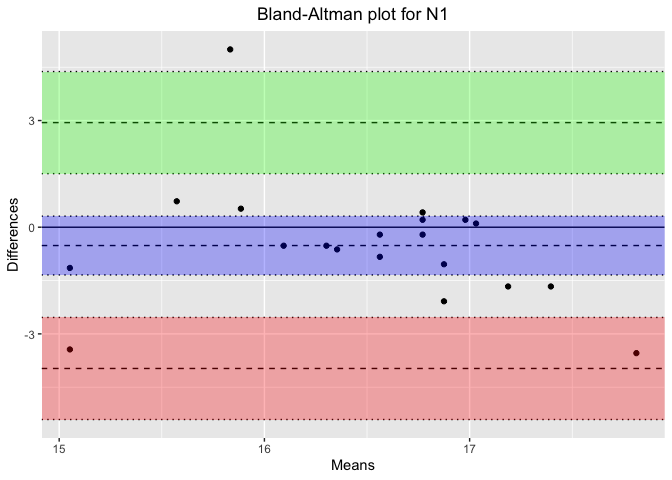
Warning: Use of `plot.data$x.axis` is discouraged.
ℹ Use `x.axis` instead.
Use of `plot.data$y.axis` is discouraged.
ℹ Use `y.axis` instead.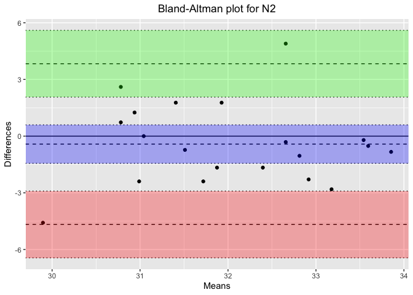
Warning: Use of `plot.data$x.axis` is discouraged.
ℹ Use `x.axis` instead.
Use of `plot.data$y.axis` is discouraged.
ℹ Use `y.axis` instead.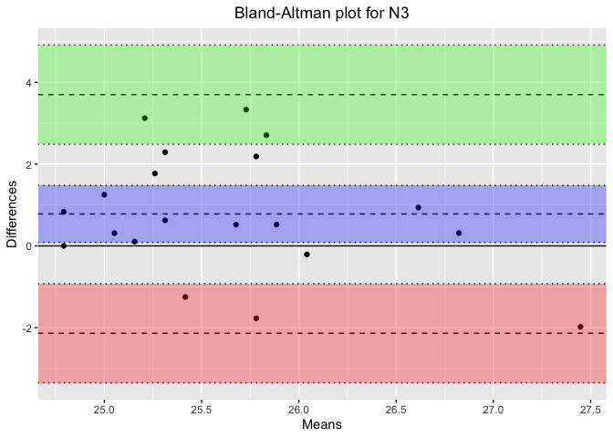
Warning: Use of `plot.data$x.axis` is discouraged.
ℹ Use `x.axis` instead.
Use of `plot.data$y.axis` is discouraged.
ℹ Use `y.axis` instead.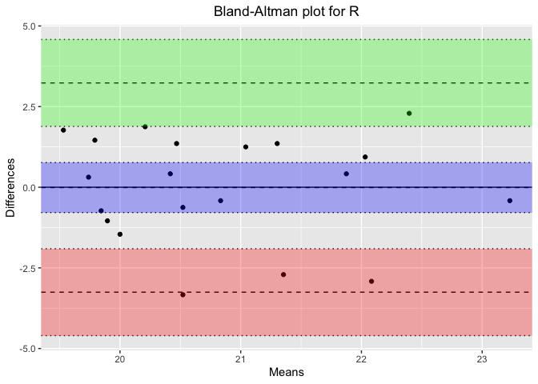
Warning: Use of `plot.data$x.axis` is discouraged.
ℹ Use `x.axis` instead.
Use of `plot.data$y.axis` is discouraged.
ℹ Use `y.axis` instead.Bland-Altman plots (basic plots, w/o the blandr package)
# Calculate mean and difference for each sleep stage
bland_altman_data <- merged_data %>%
mutate(Mean = (Percentage_PSG + Percentage_Headband) / 2,
Difference = Percentage_PSG - Percentage_Headband)
# Create separate Bland-Altman plots for each sleep stage
unique_stages <- unique(bland_altman_data$Sleep_Stage)
# Loop through each sleep stage and create a Bland-Altman plot
for(stage in unique_stages) {
stage_data <- bland_altman_data %>% filter(Sleep_Stage == stage)
p <- ggplot(stage_data, aes(x = Mean, y = Difference)) +
geom_point(size = 3, alpha = 0.6) +
geom_hline(yintercept = 0, linetype = "dashed", color = "blue") +
geom_hline(aes(yintercept = mean(Difference)), linetype = "dotted", color = "red") +
geom_hline(aes(yintercept = mean(Difference) + 1.96 * sd(Difference)), linetype = "dotted", color = "red") +
geom_hline(aes(yintercept = mean(Difference) - 1.96 * sd(Difference)), linetype = "dotted", color = "red") +
labs(title = paste("Bland-Altman Plot for", stage),
x = "Mean Percentage of Time",
y = "Difference in Percentage (PSG - Headband)") +
theme_minimal()
# Print each plot
print(p)
}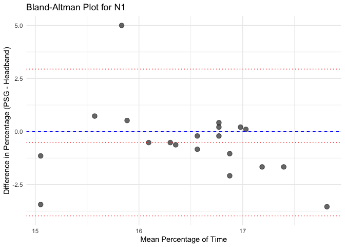
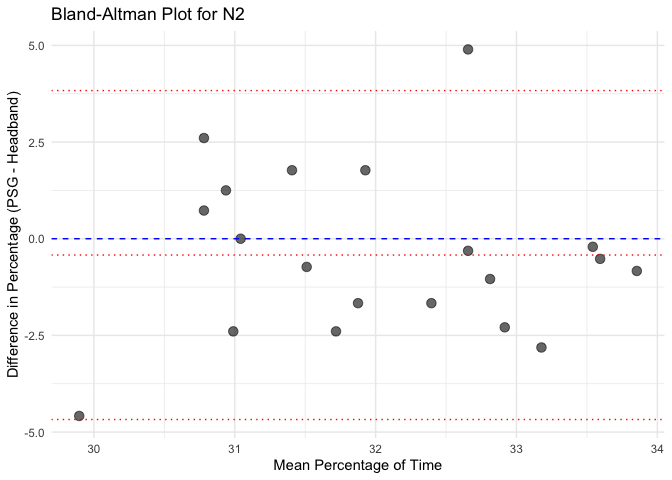

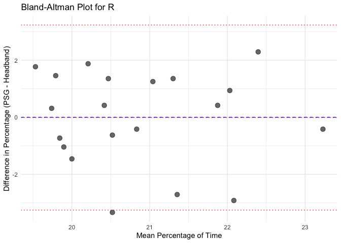
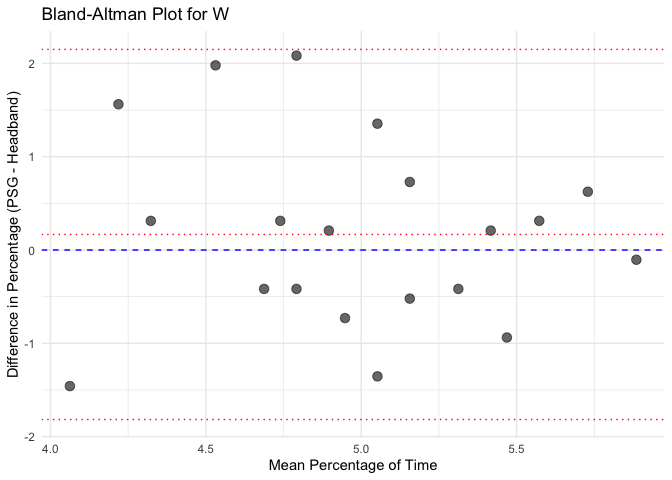
Calculate Pearson correlation for each sleep stage and each instrument
# Calculate Pearson correlation for each sleep stage
correlation_results <- merged_data %>%
group_by(Sleep_Stage) %>%
summarise(Pearson_Correlation = cor(Percentage_PSG, Percentage_Headband, use = "complete.obs"), .groups = 'drop')
# Display the correlation results
# Display the correlation results in a table with a caption and a light blue background
kable(correlation_results, caption = "Pearson Correlation for Each Sleep Stage", digits = 3) %>%
kable_styling(bootstrap_options = c("striped", "hover")) %>%
row_spec(0, background = "lightblue")| Sleep_Stage | Pearson_Correlation |
|---|---|
| N1 | -0.192 |
| N2 | 0.023 |
| N3 | -0.085 |
| R | 0.217 |
| W | -0.026 |
Calculate Cohen’s Kappa for each sleep stage
# Merge PSG and Headband data by Subject_ID and Epoch to align epochs
merged_epochs <- PSG %>%
select(Subject_ID, Epoch, Sleep_Stage_PSG = Sleep_Stage) %>%
inner_join(Headband %>% select(Subject_ID, Epoch, Sleep_Stage_Headband = Sleep_Stage),
by = c("Subject_ID", "Epoch"))
# Calculate Cohen's Kappa for each sleep stage
kappa_results <- lapply(sleep_stages, function(stage) {
stage_data <- merged_epochs %>%
filter(Sleep_Stage_PSG == stage | Sleep_Stage_Headband == stage) %>%
mutate(Sleep_Stage_PSG = ifelse(Sleep_Stage_PSG == stage, 1, 0),
Sleep_Stage_Headband = ifelse(Sleep_Stage_Headband == stage, 1, 0))
# Calculate Cohen's Kappa for the current stage
kappa_value <- kappa2(stage_data[, c("Sleep_Stage_PSG", "Sleep_Stage_Headband")],
weight = "unweighted")$value
data.frame(Sleep_Stage = stage, Cohen_Kappa = kappa_value)
})
# Combine results into a single data frame
kappa_results <- do.call(rbind, kappa_results)
# Display the Cohen's Kappa results
kable(kappa_results, caption = "Cohen's Kappa for Each Sleep Stage", digits = 3) %>%
kable_styling(bootstrap_options = c("striped", "hover")) %>%
row_spec(0, background = "lightblue")| Sleep_Stage | Cohen_Kappa |
|---|---|
| N1 | -0.814 |
| N2 | -0.657 |
| N3 | -0.590 |
| R | -0.762 |
| W | -0.956 |
Calculate Intraclass Correlation Coefficient (ICC) for each sleep stage
# Calculate ICC for each sleep stage by using the percentage of time spent in each stage
icc_results <- lapply(sleep_stages, function(stage) {
stage_data <- merged_data %>%
filter(Sleep_Stage == stage) %>%
select(Percentage_PSG, Percentage_Headband)
# Calculate ICC (2,1) for absolute agreement
icc_value <- icc(stage_data, model = "twoway", type = "agreement", unit = "single")$value
data.frame(Sleep_Stage = stage, ICC = icc_value)
})
# Combine results into a single data frame
icc_results <- do.call(rbind, icc_results)
# Display the ICC results
kable(icc_results, caption = "Intraclass Correlation Coefficient (ICC) for Each Sleep Stage", digits = 3) %>%
kable_styling(bootstrap_options = c("striped", "hover")) %>%
row_spec(0, background = "lightblue")| Sleep_Stage | ICC |
|---|---|
| N1 | -0.180 |
| N2 | 0.023 |
| N3 | -0.065 |
| R | 0.226 |
| W | -0.026 |
Calculate Mean Absolute Percentage Error (MAPE) for each sleep stage
mape_results <- merged_data %>%
mutate(APE = ((Percentage_PSG - Percentage_Headband) / Percentage_PSG) * 100) %>%
group_by(Sleep_Stage) %>%
summarise(MAPE = mean(APE, na.rm = TRUE), .groups = 'drop')
mape_results <- mape_results %>%
mutate(MAPE = paste0(round(MAPE, 2), "%"))
kable(mape_results, caption = "Mean Absolute Percentage Error (MAPE) for Each Sleep Stage", digits = 3) %>%
kable_styling(bootstrap_options = c("striped", "hover")) %>%
row_spec(0, background = "lightblue")| Sleep_Stage | MAPE |
|---|---|
| N1 | -3.65% |
| N2 | -1.56% |
| N3 | 2.89% |
| R | -0.33% |
| W | 1.42% |
Calculate Concordance Correlation Coefficient (CCC) for each sleep stage
library(DescTools)Attaching package: 'DescTools'The following objects are masked from 'package:caret':
MAE, RMSE# Calculate CCC for each sleep stage
ccc_results <- lapply(sleep_stages, function(stage) {
stage_data <- merged_data %>%
filter(Sleep_Stage == stage) %>%
select(Percentage_PSG, Percentage_Headband)
ccc_value <- CCC(stage_data$Percentage_PSG, stage_data$Percentage_Headband)$rho.c
data.frame(Sleep_Stage = stage, CCC = ccc_value)
})
# Combine results into a single data frame
ccc_results <- do.call(rbind, ccc_results)
# Display the CCC results
kable(ccc_results, caption = "Concordance Correlation Coefficient (CCC) for Each Sleep Stage") %>%
kable_styling(bootstrap_options = c("striped", "hover")) %>%
row_spec(0, background = "lightblue")| Sleep_Stage | CCC.est | CCC.lwr.ci | CCC.upr.ci |
|---|---|---|---|
| N1 | -0.1693247 | -0.5219840 | 0.2327739 |
| N2 | 0.0217664 | -0.3993760 | 0.4353233 |
| N3 | -0.0617404 | -0.3779477 | 0.2673661 |
| R | 0.2169865 | -0.2361479 | 0.5926064 |
| W | -0.0249000 | -0.4385490 | 0.3974549 |
Calculate Sensitivity for each sleep stage
# Calculate classification metrics for each sleep stage
sensitivity_results <- merged_epochs %>%
mutate(Agree = (Sleep_Stage_PSG == Sleep_Stage_Headband)) %>%
group_by(Sleep_Stage_PSG) %>%
summarise(Sensitivity = mean(Agree), .groups = 'drop')
kable(sensitivity_results, caption = "Sensitivity for Each Sleep Stage") %>%
kable_styling(bootstrap_options = c("striped", "hover")) %>%
row_spec(0, background = "lightblue")| Sleep_Stage_PSG | Sensitivity |
|---|---|
| N1 | 0.1887035 |
| N2 | 0.3449574 |
| N3 | 0.4030806 |
| R | 0.2380714 |
| W | 0.0431211 |
Compare the confusion matrix between PSG (ground truth) and Headband
confusion_results <- merged_epochs %>%
mutate(Sleep_Stage_PSG = factor(Sleep_Stage_PSG, levels = sleep_stages),
Sleep_Stage_Headband = factor(Sleep_Stage_Headband, levels = sleep_stages))
# Generate the confusion matrix
conf_matrix <- confusionMatrix(confusion_results$Sleep_Stage_Headband, confusion_results$Sleep_Stage_PSG)
# Convert confusion matrix table to a data frame for manipulation
conf_matrix_df <- as.data.frame(conf_matrix$table)
colnames(conf_matrix_df) <- c("True_Sleep_Stage", "Predicted_Sleep_Stage", "Frequency")
# Calculate percentages for each row in the confusion matrix
conf_matrix_df <- conf_matrix_df %>%
group_by(True_Sleep_Stage) %>%
mutate(Percentage = Frequency / sum(Frequency) * 100) # Calculate percentages
# Display overall statistics and per-class performance metrics
conf_matrix$overall Accuracy Kappa AccuracyLower AccuracyUpper AccuracyNull
0.29713542 0.07340406 0.29067635 0.30365597 0.31812500
AccuracyPValue McnemarPValue
1.00000000 0.34012087 conf_matrix$byClass Sensitivity Specificity Pos Pred Value Neg Pred Value Precision
Class: N1 0.18870347 0.8366700 0.18289269 0.8418517 0.18289269
Class: N2 0.34495743 0.6882065 0.34044272 0.6924910 0.34044272
Class: N3 0.40308062 0.8004366 0.41554960 0.7920702 0.41554960
Class: R 0.23807145 0.7991709 0.23795256 0.7992761 0.23795256
Class: W 0.04312115 0.9506200 0.04458599 0.9489539 0.04458599
Recall F1 Prevalence Detection Rate Detection Prevalence
Class: N1 0.18870347 0.18575265 0.16229167 0.03062500 0.1674479
Class: N2 0.34495743 0.34268521 0.31812500 0.10973958 0.3223437
Class: N3 0.40308062 0.40922015 0.26036458 0.10494792 0.2525521
Class: R 0.23807145 0.23801199 0.20848958 0.04963542 0.2085937
Class: W 0.04312115 0.04384134 0.05072917 0.00218750 0.0490625
Balanced Accuracy
Class: N1 0.5126867
Class: N2 0.5165820
Class: N3 0.6017586
Class: R 0.5186212
Class: W 0.4968706# Plot the confusion matrix with counts and percentages
ggplot(conf_matrix_df, aes(x = True_Sleep_Stage, y = Predicted_Sleep_Stage, fill = Frequency)) +
geom_tile() +
geom_text(aes(label = paste(Frequency, "\n(", round(Percentage, 1), "%)", sep = "")),
color = "white", size = 5) +
scale_fill_gradient(low = "lightblue", high = "blue") +
labs(title = "Confusion Matrix for PSG (Ground Truth) vs Headband",
x = "True Sleep Stage (PSG)",
y = "Predicted Sleep Stage (Headband)") +
theme_minimal()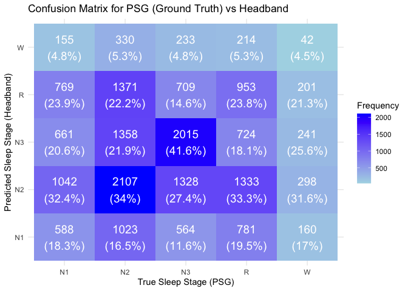
ROC Curves for each sleep stage
# Prepare data for ROC analysis
roc_data <- merged_epochs %>%
mutate(Sleep_Stage_PSG = factor(Sleep_Stage_PSG, levels = sleep_stages),
Sleep_Stage_Headband = factor(Sleep_Stage_Headband, levels = sleep_stages))
# Create a list to hold ROC objects for each sleep stage
roc_list <- list()
# Loop through each sleep stage to compute ROC
for(stage in sleep_stages) {
# Create binary outcomes for the true sleep stage
roc_data$True_Class <- ifelse(roc_data$Sleep_Stage_PSG == stage, 1, 0)
roc_data$Predicted_Prob <- as.numeric(roc_data$Sleep_Stage_Headband == stage) # Assuming you want to predict each stage
# Calculate ROC curve
roc_curve <- roc(roc_data$True_Class, roc_data$Predicted_Prob,
levels = c(0, 1), direction = "<")
# Store the ROC object in the list
roc_list[[stage]] <- roc_curve
}
# Plot ROC curves for each sleep stage
par(mfrow=c(2, 3)) # Adjust layout to fit all plots (change as needed)
for(stage in sleep_stages) {
plot(roc_list[[stage]],
col = rainbow(length(sleep_stages))[which(sleep_stages == stage)],
main = paste("ROC Curve for", stage),
print.auc = TRUE) # Print AUC on the plot
}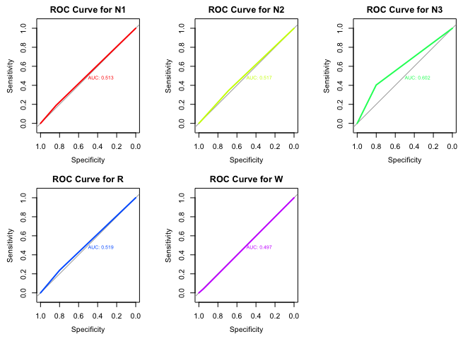